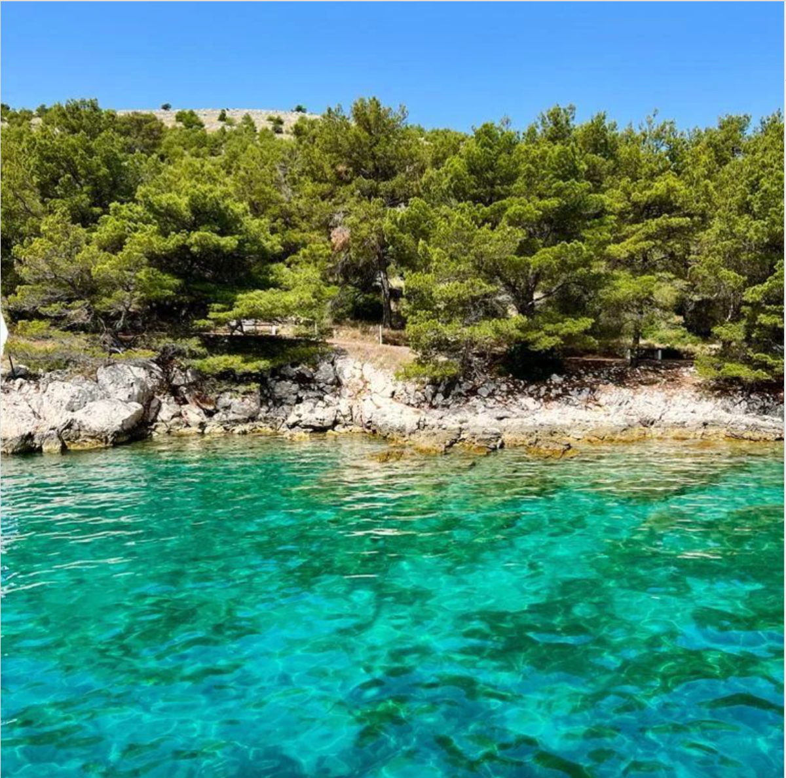
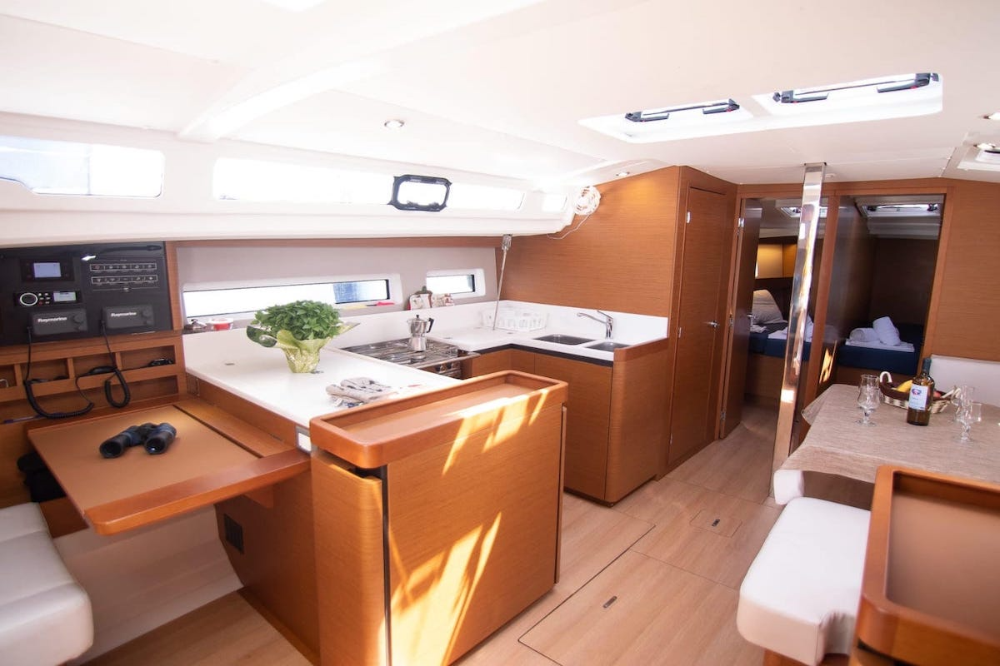

Embark on an unforgettable 7-day journey exploring the stunning islands of Croatia. With over 1,000 islands dotting the Adriatic Sea, this Mediterranean gem is one of Europe’s best-kept travel secrets. There’s no better way to immerse yourself in the region’s natural beauty and vibrant culture than by sailing — and Flavours of Croatia is here to make it happen.
Discover Our Ideal Location
Set sail from our base in Šibenik, conveniently located between Split and Zadar airports, offering the perfect starting point for your adventure. Your voyage will take you through the enchanting Dalmatian islands and the national parks situated between the iconic cities of Šibenik and Split.
The Best Time to Set Sail
The peak sailing season runs from mid-June to mid-September, perfect for sunny, tranquil voyages. For those seeking more wind and quieter waters, the shoulder season is an excellent choice. Please note, our Croatian bases close from early November to mid-April.


What’s Included in Our Trips
Sailing Boat Accommodation
Fuel & Skipper
Beverages on Board
Linens and Towels
Marina / Mooring Fees & Tourist Taxes
Transport to Wineries & Restaurants
Winery Tastings
Restaurant Dinners After Tastings
FAQs / How It Works
Do I need a sailing license to join the trip?
No, with Flavours of Croatia Sailing Holidays your trip is fully captained by a professional skipper. All you need to do is relax and enjoy the journey - no sailing experience or license required, obviously we also welcome more experienced sailors who are looking to refresh or improve their sailing skills whilst enjoying their holiday.
What sets Flavours of Croatia Sailing Holidays Croatia apart from other sailing holidays?
Our trips combine the beauty of Croatia's coastline with a curated culinary and wine-tasting adventure. We take you to renowned local wineries, authentic taverns, and hidden gems to experience the best of Croatian cuisine and world-class wines. This is more than a sailing trip, it's a cultural and gastronomic journey.
What’s included in the package price?
Your trip typically includes:
Yacht accommodation and skipper
Fuel
Beverages on board
Linens and towels
Marina/mooring fees and tourist taxes
Transports to and from wineries/restaurants
Wineries tastings
Restaurant dinners to follow all the wine tastings
Can I customise the itinerary?
Absolutely! Our team specialises in tailoring your experience to match your preferences. Whether you’d like to spend extra time at a vineyard, explore specific islands, or include additional culinary stops, we’ll design the perfect journey for you. For those seeking complete control over their adventure, we also offer the option to fully create your own itinerary. Your wishes are our priority, and we’ll collaborate with you to craft the holiday of your dreams.
What kind of food and wine experiences can I expect?
You’ll savour authentic Croatian cuisine, including fresh seafood and Dalmatian specialities! The wine experiences are exceptional, featuring boutique wineries producing some of Croatia’s finest wines.
Stops often include:
Family-run vineyards for private tastings.
Traditional konobas (taverns) offering farm-to-table dishes.
Scenic dining spots overlooking the Adriatic.
Check out Our Partners page to see some of the unbelievable vineyards we visit!
Do I need to arrange meals onboard?
Many of our trips include opportunities for dining at exclusive local restaurants. However, if you’d like to eat onboard, provisioning can be arranged before departure or during the trip. You can even work with our skippers to find local markets for fresh ingredients. Beverages on board are included in your trip.
What are the check-in and check-out times?
Check-in is typically on Saturday at 5:00 PM, with check-out the following Saturday by 9:00 AM. Flexible schedules may be available during the shoulder season.
What should I bring?
Pack light and bring essentials such as:
Casual, comfortable clothing and swimwear.
A light jacket for evenings.
Sunscreen, hats, and sunglasses.
Any personal toiletries or medications.
Provisions for wine and food stops are typically planned, so no need to worry about bringing those items.
Are there options for non-drinkers?
Absolutely! While wine is a highlight, the focus is equally on local culture and cuisine. From exploring historic towns to indulging in gourmet meals, there’s something for everyone.
What’s the cancellation policy?
Cancellation policies may vary, but typically:
Cancel at least two months in advance: 30% forfeiture.
Cancel at least one month in advance: 50% forfeiture.
Cancel less than one month in advance: 100% forfeiture.
Please check your booking terms for details.
What are the best times of year for sailing and wine experiences?
The peak season, from mid-June to mid-September, offers ideal sailing conditions and lively coastal towns. The shoulder seasons (May, early June, and September) are perfect for those seeking fewer crowds, stronger winds for sailing, and the harvest season for many wineries.
Do I need to book wine tours in advance?
We recommend booking wine tours through our team to ensure availability, as some boutique wineries have limited space. Many wine experiences can also be arranged on the go during your trip.
Stay close
Sign Up For New Itineraries And Deals Straight To Your Inbox!